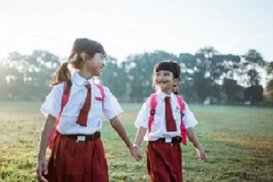
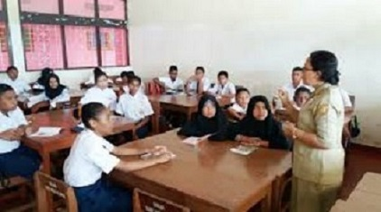
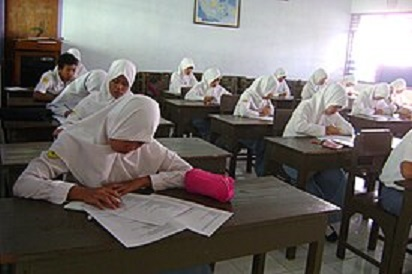

Apa Itu Pendidikan?
Pendidikan adalah sesuatu yang tidak hanya dibutuhkan pada tingkat pribadi, tetapi juga pada tingkat global, karena itu adalah sesuatu yang menjaga dunia kita tetap aman dan menjadikannya tempat yang lebih damai. Pendidikan cenderung mengajari orang perbedaan antara benar dan salah, dan dapat membantu orang menghindari situasi berisiko. Dari semua yang telah dikatakan di atas dapat disimpulkan bahwa pendidikan sangatlah penting. Seluruh dunia mengejar pendidikan. Setiap individu membutuhkan pendidikan untuk menjalani kehidupan secara maksimal. Untuk berinteraksi lebih baik dengan lingkungan kita dan memanfaatkan rentang hidup kita sebaik-baiknya, pendidikan sangat penting.
Pentingnya Pendidikan bagi kehidupan
Pendidikan itu penting bagi seseorang karena dengan adanya pendidikan, maka seseorang dapat menjadi produktif. Pendidikan sangat penting karena pendidikan dapat memberi seseorang sebuah keterampilan dan hal yang dibutuhkan untuk bisa berhasil dalam hidup. Inilah sebabnya mengapa pendidikan memainkan peran besar tidak hanya bagi siswa tetapi juga orang dewasa. Dengan adanya pendidikan, maka seseorang bisa menafkahi keluarga mereka. Pendidikan membantu individu membuat keputusan yang baik dan meningkatkan peluang mereka untuk berhasil dalam hidup.
Ini juga penting bagi masyarakat. Ini dapat membantu orang tumbuh sebagai anggota masyarakat yang produktif, berdampak positif pada ekonomi dan mengurangi tingkat kejahatan secara signifikan. Mengejar pendidikan adalah salah satu aspek terpenting dalam kehidupan. Pendidikan adalah apa yang memberdayakan kita. Ini memberi kita pengetahuan tentang dunia dan memungkinkan kita untuk mengalami hidup dalam semua warna yang indah. Seseorang tidak dapat benar-benar menikmati hidup tanpa mengetahui keajaiban di sekitarnya
Jenjang Pendidikan Formal
Jenjang Pendidikan Formal Dalam pendidikan formal, terdapat jenjang atau tahap pendidikan yang dikelompokkan berdasarkan dua hal. Pendidikan formal dikelompokkan berdasarkan tujuan yang ingin dicapai dan kemampuan yang nantinya dikembangkan. Menurut Undang-Undang Nomor 20 Tahun 2003 pasal 14, jenjang pendidikan formal meliputi:
a. Jenjang pendidikan dasar (SD)
Jenjang ini adalah jenjang paling dasar dalam pendidikan formal di Indonesia, di mana masa pendidikan yang harus ditempuh dalam jenjang ini adalah 9 tahun. Jenjang pendidikan dasar di Indonesia berbentuk Sekolah dasar (SD) atau Madrasah Ibtidaiyah (MI) dan Sekolah Menengah Pertama (SMP) atau Madrasah Tsanawiyah (MTS). Sekolah dasar atau sederajat merupakan jenjang pendidikan yang ditempuh dengan jangka waktu 6 tahun, mulai dari kelas 1 sampai kelas 6. Dengan demikian, jenjang pendidikan ini menjadi yang paling lama ditempuh dibandingkan yang lain. Setelah lulus dari Sekolah Dasar atau sederajat, anak Anda memasuki sekolah menengah pertama yang ditempuh dalam waktu 3 tahun yang dimulai dari kelas 7 sampai kelas 9.
b. Sekolah Menengah Pertama (SMP)
Sekolah Menengah Pertama (SMP) adalah jenjang pendidikan dasar pada pendidikan formal di Indonesia setelah lulus dari Sekolah Dasar (SD atau sederajat). Sekolah menengah pertama ditempuh dalam kurun waktu 3 tahun. Sekolah menengah pertama diselenggarakan oleh pemerintah maupun swasta.
c. Jenjang pendidikan menengah (SMA)
Sekolah Menengah Atas (SMA) atau Madrasah Aliyah (MA) menjadi jenjang selanjutnya dalam pendidikan formal di Indonesia setelah lulus dari sekolah menengah pertama. Jenjang pendidikan menengah ini ditempuh dalam jangka waktu 3 tahun. Dalam jenjang pendidikan ini, anak Anda akan didik dengan matang agar memperoleh pekerjaan ataupun pendidikan di tahap lanjutan, yaitu jenjang pendidikan tinggi.
d. Jenjang pendidikan tinggi
Terakhir, ada jenjang pendidikan tinggi yang memiliki waktu studi minimal tiga tahun. Pada jenjang ini, anak Anda akan dihadapkan dengan pilihan bidang studi yang ingin dipelajari lebih dalam. Jenjang pendidikan tinggi dimulai dari diploma (D3), sarjana (SI), magister (S2), spesialis, dan juga doktor. Program pendidikan yang dijalankan dalam jenjang pendidikan tinggi juga berbeda-beda menyesuaikan dengan bidang studi yang dipilih. Tujuan diselenggarakannya jenjang pendidikan tinggi adalah untuk mencetak individu yang berguna bagi masyarakat dan mampu meraih potensi yang terdapat dalam diri masing-masing.
Dari keempat jenjang pendidikan tersebut itu sangat amat penting untuk kehidupan di masa depan. namun banyak orang yang menganggap sepele mengenai pendidikan itu, orang tua mereka bahkan menginginkan jika anaknya memiliki banyak uang dan memutuskan untuk putus sekolah dijenjang smp
Klik Link dibawah ini untuk melihat secara detail mengenai jenjang pendidikan
Artikel Lengkap Jenjang Pendidikan
Artikel Mengenai Pendidikan SD
Artikel Mengenai Sekolah Menengah Pertama
